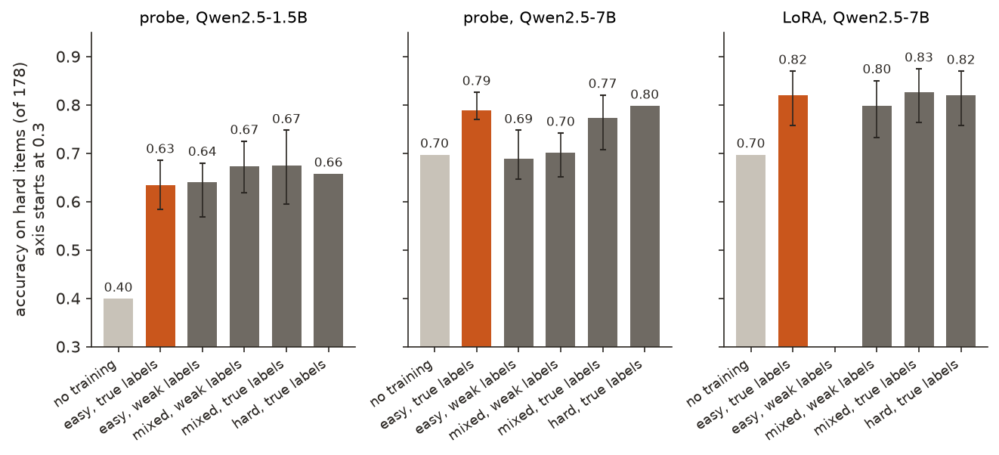

← Research·Experiments·
Correct labels on easy maths teach Qwen2.5-7B to judge hard maths as well as hard labels do
If people can only check easy problems, train on those: for a 7B student checking maths solutions, 299 correctly labelled two-step problems did as well on five-step problems as 299 correctly labelled five-step ones, and better than the same number of problems of every difficulty labelled by a weak model. A 1.5B student did not generalise this way.
Summary: the short answer and the key results
In short
If only easy problems can be labelled reliably, is a strong model better trained on those, or on problems of every difficulty with a weak model’s noisy labels?
For Qwen2.5-7B, on the easy ones. The task is the one from Scalable oversight 101: given a GSM8K maths problem and a proposed solution, say whether the solution is right. Difficulty is the number of steps in GSM8K’s own worked solution: easy is 2, hard is 5 or more. A linear probe on the 7B’s activations, trained on 299 easy items with correct labels, judged hard items right 78.9% of the time (mean of 20 draws), against 79.8% trained on hard items and 70.1% trained on items of every difficulty labelled by a weak 0.5B teacher, which is no better than the untrained model (69.7%). Fine-tuning the 7B with LoRA narrowed the gap: 82.0% on hard items from easy correct labels, 79.8% from the teacher’s (paired p = 0.56). For the smaller Qwen2.5-1.5B, easy correct labels were the worst training set for hard items (63.3%).
Key results
| What we tested | Result (accuracy on 178 hard items) | Compared with |
|---|---|---|
| Probe on Qwen2.5-7B: do easy correct labels teach hard items? | Yes: 0.789 (20 draws, 0.77–0.83), as good as hard correct labels (0.798) | Weak teacher’s labels on every difficulty: 0.701 (0.65–0.74); untrained: 0.697 |
| LoRA on Qwen2.5-7B | Easy correct labels 0.820 [0.76, 0.87]; hard 0.820; mixed 0.826 | Teacher’s labels: 0.798 on 299 items (p = 0.56), 0.764 on all 1,300 (p = 0.12) |
| Probe on Qwen2.5-1.5B | No: easy correct labels 0.633, the lowest of the trained probes | Hard 0.657; mixed with correct labels 0.675, with the teacher’s 0.672 |
| How wrong are the teacher’s labels? | About as wrong on easy items as on hard: 69% and 71% right on the training items | The weak labels are not specifically bad on hard items |
01Introduction
A maths teacher can mark two-step sums with certainty but not long multi-step solutions. Asked to train a new marker, they have two options: give it only the short sums, marked perfectly, or give it a mix of everything, marked by a shaky assistant. For a 7B language model judging GSM8K solutions, the first option won: a probe trained on 299 perfectly labelled two-step problems judged five-step problems as well as one trained on five-step problems, and nine points better than one trained on the shaky assistant’s labels.
What is known. Hase et al. (2024), “The unreasonable effectiveness of easy training data for hard tasks”, found that training language models on easy data often recovers most of the performance of training on hard data, and argued that easy data is the better buy when hard data is expensive or noisy to label. Burns et al. (2023) framed weak-to-strong generalisation: a strong student trained on a weak supervisor’s labels can beat its supervisor. Our Scalable oversight 101 ran the weak-to-strong side on this task.
What is missing. The two options side by side, on the same task and items: correct labels on unrepresentative (easy) data against noisy labels on representative data.
If only easy problems can be labelled reliably, is a strong model better trained on those, or on problems of every difficulty with a weak model’s labels?
What this note does. It trains two students under five label conditions, with probes and with LoRA, and tests each on held-out easy and hard items. Its contributions:
- A measurement: for a 7B student, easy correct labels generalise to hard items as well as hard correct labels do.
- A comparison: easy correct labels beat a weak teacher’s labels clearly for probes, slightly for LoRA.
- A boundary: a 1.5B student does not generalise from easy items.
What would count as an answer. Set before the runs: accuracy on held-out hard items for each condition, for each student and method, with the easy-correct-label condition compared against the weak-label and hard-label conditions.
02Setup
2.1 Task and difficulty
The items are scalable-oversight-101’s GSM8K-verification items: a grade-school maths problem with a proposed solution, labelled right or wrong. Difficulty is the number of lines in GSM8K’s own worked solution to the problem. Easy items take 2 steps and hard items 5 or more; 3–4-step items are left out of the comparison. The student-training pool holds 348 easy and 299 hard items among 1,300; evaluation uses the dev and test items together, 187 easy and 178 hard (nothing is tuned on either).
2.2 Students, labels, training
Each condition trains on 299 items:
| Condition | Items | Labels |
|---|---|---|
| easy, true labels | 2-step only | Correct |
| easy, weak labels | 2-step only | The 0.5B teacher’s probabilities |
| mixed, weak labels | A random draw of every difficulty | The teacher’s probabilities |
| mixed, true labels | A random draw of every difficulty | Correct |
| hard, true labels | 5+ steps only (all 299) | Correct |
The weak teacher is scalable-oversight-101’s: a linear probe on Qwen2.5-0.5B’s activations, trained on its own split. Its labels on the student items are right 69% of the time on easy items and 71% on hard ones.
- Probes: logistic regression on the student’s frozen activations (cached by scalable-oversight-101), for Qwen2.5-1.5B and 7B; each condition repeated on 20 random draws of 299 items (hard, true labels uses all 299 hard items, so its draws are identical).
- LoRA: Qwen2.5-7B fine-tuned with scalable-oversight-101’s recipe (rank 16, learning rate 10−4, 2 epochs, batch 8, seed 0), one run per condition, scored by whether logit(Yes) − logit(No) is above 0. The easy-weak condition was not run with LoRA. Scalable-oversight-101’s two full-size 7B runs (all 1,300 items, true and teacher’s labels) are re-scored on the same split.
The untrained student’s own yes/no answer is the zero-training baseline. LoRA runs are compared on the same hard items with an exact McNemar test; probe conditions by the range of their 20 draws.
03How the study was run
- Difficulty: count the steps in GSM8K’s worked solution for every item.
- Probes: 2 students × 5 conditions × 20 draws, seconds on a CPU.
- LoRA: 4 fine-tunes of Qwen2.5-7B, 10–13 minutes each.
- Compute every accuracy and test, and re-score scalable-oversight-101’s full-size runs.
| Fixed before any run | Changed after reading results |
|---|---|
| The difficulty measure and cut-offs, 299 items per condition, the conditions, the probe and LoRA recipes, the evaluation split | Nothing in the method. The first LoRA launch stopped on an import-order error before training; it was fixed and rerun unchanged |
Conditions: Qwen2.5-7B in bfloat16 on an Apple M5 Max laptop, about an hour for the four fine-tunes; probes on the CPU. No API calls.
04Results
Three findings:
- 4.1 For a probe on the 7B, easy correct labels are as good as hard ones, and much better than weak labels.
- 4.2 Fine-tuning narrows the gap: every 7B run reaches about 0.80 on hard items.
- 4.3 The 1.5B student does not generalise from easy items.

4.1 For a probe on the 7B, easy correct labels are as good as hard ones, and much better than weak labels
A probe on Qwen2.5-7B trained on 299 easy items with correct labels judged hard items right 78.9% of the time (20 draws, 77.0–82.6%), against 79.8% trained on the 299 hard items and 77.3% on a mixed draw with correct labels. Trained on the weak teacher’s labels it scored 70.1% (65.2–74.2%) on a mixed draw and 68.8% on easy items, no better than the untrained model’s 69.7%.
The ranges of the 20 draws do not overlap: the worst easy-correct draw beats the best weak-label one. Correct labels on the wrong distribution of problems beat noisy labels on the right one by about nine points. The probe reads a direction the 7B already has: two-step examples are enough to find it, and labels that are wrong 30% of the time pull it off course.
On easy items, every trained probe scored below the untrained model (72–82% against 84.5%): a linear read-out is a cruder judge of easy problems than the model’s own answer. On hard items, every probe with correct labels beat it.
4.2 Fine-tuning narrows the gap: every 7B run reaches about 0.80 on hard items
Fine-tuned with LoRA on 299 easy items with correct labels, Qwen2.5-7B judged hard items right 146 of 178 times (82.0% [75.7, 87.0]), the same as on 299 hard items (146) and on a mixed draw (147). On the teacher’s labels it scored 142 (79.8%; 15 items only the easy-correct run got, 11 only the teacher-label run; p = 0.56).
Scalable-oversight-101’s full-size runs, re-scored on the same items, agree: 146 of 178 trained on all 1,300 items with correct labels, 136 on the teacher’s labels for all 1,300 (22 against 12 items; p = 0.12). Fine-tuning the whole model lets the 7B lean on what it already knows and partly ignore wrong labels, the weak-to-strong effect scalable-oversight-101 measured; the easy-versus-weak difference shrinks to two to six points, within the noise of 178 items.
4.3 The 1.5B student does not generalise from easy items
For a probe on Qwen2.5-1.5B, easy correct labels gave 63.3% on hard items, the lowest of the five trained conditions; hard correct labels 65.7%, mixed correct 67.5% and mixed weak 67.2%. The ranges of the 20 draws overlap throughout. The 1.5B starts far lower (39.9% untrained on hard items) and every probe lifts it to about two-thirds; what it learns from two-step items does not carry to five-step ones any better than noise-labelled examples of every length. Easy-to-hard generalisation, here, is something the stronger model does.
05Compared with prior work
| Hase et al. (2024) | Scalable oversight 101 | This note | |
|---|---|---|---|
| Question | Easy data vs hard data | Weak labels vs a ceiling | Easy correct labels vs weak labels on everything |
| Easy data recovers most of the hard-data result | ✓ | n/a | ✓ for the 7B; ✗ for the 1.5B |
| Probes and fine-tuning compared | ✓ | ✓ | ✓ |
| Weak labels in the comparison | ✗ | ✓ | ✓ |
06Implications for AI safety
Scalable oversight asks how to supervise models on tasks people cannot check. One answer is to check only what people can, the easy cases, and rely on the model to carry the lesson to the hard ones. For a 7B model judging maths solutions that worked, as well as training on hard cases would have, and better than spreading a weak supervisor’s labels over everything. Two cautions: it did not work for the smaller model, and the weak supervisor here is uniformly noisy rather than specifically bad on hard items, which is the case that matters most. Whether easy-to-hard holds when the hard cases differ in kind, not only in length, is untested.
The recommendation in one sentence: when only easy cases can be labelled reliably, train a capable model on those correct labels before reaching for a weak supervisor’s labels on everything, and test both on held-out hard cases.
07What this does not show
- One task, difficulty by length. Hard means more steps in the same kind of problem. Hard problems of a different kind may not follow easy ones.
- A uniformly noisy teacher. The teacher’s labels are about as wrong on easy as on hard items; a supervisor that fails specifically on hard items would be a harder test for the weak-label options.
- One LoRA run per condition. The LoRA differences are a few points on 178 items, within the noise; more seeds would be needed to separate them.
- 178 hard items. A 95% interval on a single accuracy is about ±6 points.
- Two students from one family. Qwen2.5-1.5B and 7B only.
08Reproduce it
Recompute every number and the figure from the shipped results:
experiments/easy-to-hard/reproduce.sh --scoresRerun everything, about an hour on an Apple-silicon laptop, after scalable-oversight-101’s data and activations are in place and with Qwen2.5-7B-Instruct in the Hugging Face cache:
experiments/easy-to-hard/reproduce.sh --dry-run # lists every command
experiments/easy-to-hard/reproduce.sh09What’s next
- A supervisor that is reliable on easy items and poor on hard ones (a weaker teacher on long problems), the case easy-only training is meant to beat.
- Hard items of a different kind, not only more steps: competition problems, or solutions with a subtle rather than an arithmetic error.
- Several LoRA seeds per condition, so the fine-tuning differences can be resolved.
10Questions and answers
Does training on easy problems generalise to hard ones?
For Qwen2.5-7B judging GSM8K solutions, yes: a probe trained on 299 two-step problems with correct labels scored 78.9% on five-step problems, against 79.8% trained on five-step problems. For Qwen2.5-1.5B, no.
Are correct labels on easy data better than noisy labels on all data?
For a probe on the 7B, clearly: 78.9% against 70.1% on hard items, with the 20 random draws not overlapping. For LoRA fine-tuning, slightly: 82.0% against 79.8%, not significant on 178 items.
How does this relate to weak-to-strong generalisation?
They are two answers to the same oversight problem. Weak-to-strong uses imperfect labels on everything; easy-to-hard uses perfect labels on what can be checked. Here, for a 7B student, easy-to-hard was at least as good, and clearly better for a probe.
AAppendix: data
Every number comes from a file in results/; README.md describes every field.
probes.json: every probe condition’s accuracy on easy and hard items, with the range of its 20 draws, and the teacher’s label accuracy.lora/<run>.json: each fine-tune’s score on every dev and test item.summary.json: every accuracy, interval and test quoted here.
Techniques
| Design | Easy-to-hard generalisation (Hase et al., 2024) against weak-label training (Burns et al., 2023) on the same items |
|---|---|
| Training | Logistic-regression probes on frozen activations; LoRA fine-tuning on the yes/no logit |
| Controls | Hard items with correct labels (in-distribution ceiling); the untrained model |
| Statistics | Ranges over 20 random draws; Wilson intervals; exact McNemar tests on paired hard items |
Tech stack
| Models | Qwen2.5-0.5B, 1.5B and 7B Instruct from the Hugging Face Hub |
|---|---|
| Data | GSM8K (openai/gsm8k, MIT licence), as verification items from scalable-oversight-101 |
| Training and inference | PyTorch, Hugging Face Transformers and PEFT, scikit-learn, bfloat16 on Apple MPS |
| Compute | An Apple M5 Max laptop, about an hour; no API calls |
Revision history
- Nov 9, 2026: First published.
How to cite
@misc{lie2026easytohard,
author = {Albert Lie},
title = {Correct labels on easy maths teach Qwen2.5-7B to judge hard maths as well as hard labels do},
year = {2026},
month = nov,
url = {https://albertlieyingadrian.github.io/steerlab/experiments/easy-to-hard/report/}
}